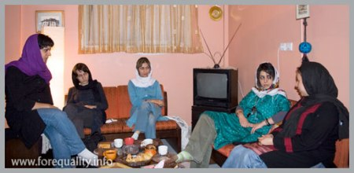
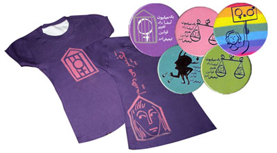
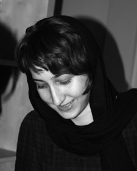
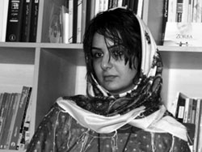
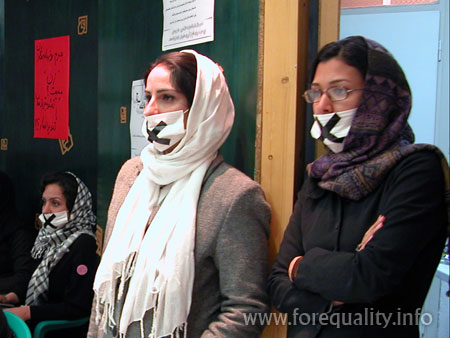
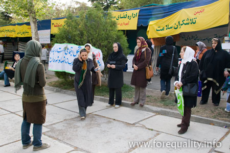
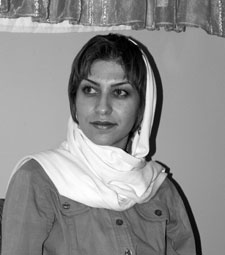
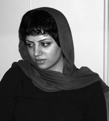
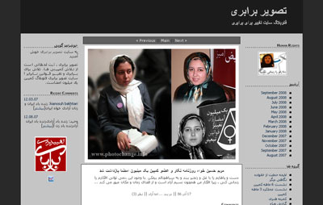

|
|

میزگردی با کمیته هنری کمپین یک میلیون امضا در تهران:
تلاشی برای گسترش یک فعالیت هنری فمینیستی و جنبشی
تنظیم :آزاده فرامرزی ها
جمعه29 شهریور 1387
کمیته هنری در آستانه دومین سال فعالیت کمپین شکل گرفت و چنانکه اعضای آن می گویند تلاش کرده بحث هنر جنبشی و گسترش شکلی از فعالیت هنری که نسبت به پیرامون خود بی تفاوت نیست و واکنش نشان می دهد را باز کند و با شکستن تصویر هنرمند نخبه، از توانایی ها و خلاقیت های همه افرادی که داوطلب فعالیت های هنری در راستای اهداف کمپین بودند استفاده کند .
در آستانه سومین سالگرد کمپین نسیم خسروی، رها عسگری زاده، آزاده فرامرزی ها، تارا نجد احمدی از اعضای کمیته هنری و مریم حسین خواه از سایت تغییر برای برابری درباره با فعالیت های این کمیته و چگونگی شکل گیری آن گفتگو کردند.

مریم حسین خواه: کمیته هنری کمپین از یکسال پیش فعالیت رسمی خودش را شروع کرده و با فعالیت های مختلفی از ترتیب دادن کنسرت و تئاتر و نمایشگاه گرفته تا طراحی سایت تهیهپین و تی شرت و سرود برای کمپین از فرصت هایی که هنر در اختیار یک فعالیت اجتماعی می گذارد برای پیشبرد اهداف کمپین استفاده کرده است.استفاده از هنر در فعالیت های اجتماعی یک بحث تازه نیست اما شکل گیری یک فعالیت هنری فمینیستی در یک حرکت اجتماعی گسترده مانند کمپین یک میلیون امضا اتفاقی کم سابقه بوده است. چه شد که تصمیم به تشکیل یک کمیته هنری تمرکز دادن به فعالیت های هنری کمپین افتادید؟

تارا نجداحمدی: طراحی سایت و لوگو یا حتی پین نوعی کار تکمیلی و برای کمک به پیشبرد خواسته هایمان در کمپین بود ولی بعدها فعالیت های هنریمان به طور مستقل هم معنا پیدا کرد و موفق شدیم باب بحث های مهم دیگری را هم باز کنیم؛ مثل همان بحث هنر جنبشی و گسترش شکلی از فعالیت هنری که نسبت به پیرامون خود بی تفاوت نیست و واکنش نشان می دهد. مثلا همین که هنر و فعالیت اجتماعی دو بحث جداگانه نیستند.

پیش از برگزاری کنسرت و تشکیل کمیته هنری، با چند نفر دیگر از فعالان کمپین یک نمایشگاه نقاشی در فرهنگسرای بهمن برگزار کردیم که متاسفانه بعد 3 یا 4روز تعطیل شد, البته در این نمایشگاه فقط بچه های هنری کمپین حضور نداشتند و هنرمندان زیادی از خارج کمپین هم آثارشان را به این نمایشگاه دادند و در این زمینه خانم رزیتا شرف جهان هم کمک بزرگی کرد. به نظر من اتفاقی که ما به دنبالش بودیم افتاد. یعنی بحثی که آغاز شد خیلی خوب ادامه پیدا کرد و بعد در برنامه های دیگر مثل تئاترها نمود پیدا کرد. این بحث که هنر را از داخل خانه ها یا گالری ها یا سالن ها بیرون بکشی و در کنار مردم و به موازات فکر و عقیده ات قرار دهی به یکی از بحث های اساسی ما در کمپین تبدیل شد. به نظر من پین ها و تئاتر های بچه ها و استیکرهایی که این روزها همه آن ها را در اعتراض به لایحه به در و دیوار می چسبانند تجربه های موفقی بودند.
رها عسگری زاده: آغاز به کار رسمی کمیته هنری هم یک سال پیش بود. در شهریور 1386 همزمان با سالگرد کمپین قرار شد کنسرتی به نفع کمپین ترتیب بدهیم و پین هایی هم طراحی کنیم که طراحی پین را تارا به عهده گرفت. برای برپایی کنسرت هم تیمی تشکیل دادیم که در این تیم میرا قربانی فر و مریم کسایی و نسیم هم بودند. اجرای این کنسرت را پروین بهمنی هنرمند قشقایی و مردمی برعهده داشت که در آمد فروش بلیط های آن را به کمپین اهدا کرد. حین تدارکات این برنامه ها بود که کمیته هنری شکل گرفت یعنی ابتدا ایده تشکیل گروه هنری در رسانه کمپین مطرح شد و پس از آن با زیاد شدن تعداد بچه های فعال و علاقه مند، کمیته هنری به شکل مستقل تشکیل شد.
مریم: این فعالیتها چه تاثیری بر آدمهای بیرون از کمپین داشته اند؟ مثلا در جذب نیرو ؟
تارا: هنرمندانی که این کارها را دیده اند برخورد خوبی با این ماجرا داشته اند. اما بیشتر و مهمتر از آن به نظر من تاثیر فعالیتهای ما بر مخاطب عام است. یعنی دقیقا زمانی که مردم پین های ما را می بینند و از ما درباره آن ها سوال می کنند, یا مثلا زمانی که استیکرهای چسبیده به دیوار خانه شان را می بینند کار ما در همان لحظه تاثیر خود را گذاشته و به نظر من این خیلی بیشتر از یک نمایشگاه بزرگ یا تئاتر بزرگ با حضور هنرمندان بزرگ که تنها عده ای خاص آنها را می بینند تاثیر دارد. این یعنی وقتی می گوییم بحث زنان در جامعه گسترش یافته, آن را به شکلهای مختلف و کوچک در گوشه و کنار شهر ببینیم.
نسیم خسروی : وقتی پین کمپین را روی کیف و یا لباست نصب می کنی دیگر نمی توانی انتخاب کنی چه زمانی می خواهی برای امضا گرفتن با آدمها وارد گفتگو شوی چون آنها تو را به گفتگو وادار می کنند! و این تجربه را حتما اکثر اعضای کمپین دارند.
نکته ی دیگر هم اینست که همین الان تعدادی از نیروهای جدید و بسیار مستعد و فعال ،کارشان در کمپین را با گروه تیاتر آغاز کرده اند. و بعد از آن حتی وارد کارگاه های آموزشی شدند چون با تیاتر شاید در یک دوره فشرده و کوتاه خیلی چیزها را از دغدغه های اصلی کمپین می آموزند.
مریم: تئاترها هم در ادامه همین ایده بودند؟

آزاده فرامرزی ها : قبل از اینکه به بحث تئاتر برسیم من فکر کنم بحث هنر اجتماعی که از قبل شروع شده بود در برنامه انجمن صنفی روزنامه نگاران که برای دو تا از بچه های کمپینی زندانی برگزار می شد یک نمود بیرونی پیدا کرد. روز قبل از اجرای آن برنامه فکر کردیم که چطور می توانیم کاری انجام دهیم که بدون حرف زدن و سخنرانی دیده شویم. بعد ایده ماسک ها مطرح شد که لزوما یک "کار هنری" نبود اما خیلی کمک کرد که برنامه از حالت سخنرانی صرف و معمولی خارج شود و اعتراض ما به مسئله زندانی شدن دوستانمان کاملا در معرض دید قرار بگیرد.
آن تجربه برای خود من خیلی خوب و تاثیرگذار بود. چون از یک طرف خیلی ها آن روز با ما همکاری کردند, از ما ماسک گرفتند و به دهانشان زدند و از طرف دیگر تمام عکسهای به جا مانده از آن روز, عکسهایی است که افراد در آنها ماسک زده اند و این در واقع نوعی استفاده بصری از دیدگاه ما به شمار می رفت.

بعد از آن ایده کارگاههای نمایشنامه نویسی مطرح شد که من و نسیم آنها را برگزار کردیم و تعدادی از دوستان کمپینی در آنها شرکت کردند و خیلی هم خوب جواب داد. از دل این کارگاههای نمایشنامه نویسی دو ایده بیرون آمد: اول ایده تئاتر راحله زمانی با عنوان"تاب بازی:نه" بود که با نسیم روی ان کار کردیم و بلاخره هم در دانشکده اقتصاد دانشگاه علامه اجرایش کردیم. این نمایش برگرفته از یک اتفاق واقعی بود. راحله زمانی زندانی متهم به قتلی بود که با وجود همه تلاشهایی که برای نجاتش صورت گرفت نهایتا اعدام شد. زندگی راحله از یک طرف دراماتیک بود و از طرف دیگر دستمایه خوبی بود برای آنچه در کمپین دنبال می کنیم. این نمایش با تمام کاستی ها و وقت کم (چون می خواستیم حتما در راستای برنامه های 8 مارس اجرا شود) و مشکلاتی که برای گرفتن سالن داشتیم اجرا شد و بازخورد آن – نه خیلی عالی- ولی بد نبود. ایده دیگری که از کارگاههای نمایشنامه نویسی بیرون آمد, ایده نمایشنامه های کوتاه چند دقیقه ای راجع به قوانین مورد اعتراض کمپین بود. مسئولیت نوشتن این متن های کوتاه را ناهید جعفری به عهده گرفت. تیمی که این کار را به انجام رساند من, ناهید جعفری, رها, دلارام علی, نفیسه آزاد و نسیم خسروی بودیم. بار اول این متنها را در خانه اجرا کردیم و فیلم گرفتیم. بعد یکی دو بار در برنامه های مختلف 8 مارس مانند برنامه صندوق دوستی اجرا کردیم و یک بار هم در غرفه انجمن تلاشگران سلامت در پارک ملت؛ در واقع اولین باری که ما کارمان را در یک فضای کاملا عمومی اجرا می کردیم همان پارک ملت بود که واقعا تجربه منحصربه فردی بود و ارتباطی که با تماشاگران برقرار شد خیلی خوب و مثبت بود, مشارکت آنها برای خود من خیلی جالب بود.

نسیم : به عقیده ی من تجربه ی هر کدام ما در رسیدن به این مقطع از فعالیتمان، تجربه ی منحصر به فردیست. که لزوما رسیدن از دانش تیوریک به کار اجرایی نبوده است بلکه گذشته از ضرورت همراهی این دو بخش عموما نتیجه ی نیاز، و همفکری گروهی و جرقه ی راه حل های ساده ای برای کمی خلاصی از این حجم فشار و تنگنا بوده است. ورود من به کمپین، اندکی قبل از اعلام وجود کمیته ی هنری بعد از جشن سالگرد کمپین بود. وارد فعالیت در یک جنبش شده بودم اما هنوز نمی توانستم تصمیم بگیرم که مثلا نمایشنامه ای با موضوع قوانین بنویسم چون هنوز نگاهم به هنر نگاهی مستقل و جوششی بود. این فاصله برای من با ایده ی کارگاه نمایشنامه نویسی طی شد زمانی که دوباره همه ی آموزشهای دوره ی دانشگاه را برای خودآگاه کلماتم، این بار برای درس دادن به دوستانم دوباره می خواندم انگار به خودم هم دوباره یاد می دادم که چطور دغدغه ی اجتماعیم را تبدیل به اثر نمایشی کنم !

کارگاه نمایشنامه نویسی را در اواسط پاییز و زمستان 86 با موضوع تعدد زوجات با همراهی آزاده برگزار کردیم. ماحصل این کارگاه دو نمایشنامه ی تمام شده گروهی و یک نمایشنامه ی نیمه تمام بود. و ایده های زیادی که هنوز باید نوشته شوند. نویسندگان این کارگاه ، سیاوش خدایی، نازلی پارسافر، محمد شوراب، زهره و سعید و ناهید جعفری بودند. اما در کنار این کارگاه ایده ی نمایشنامه های کوتاه توسط ناهید جعفری مطرح شدند و طراحی پلات آنها به شکل کاملا گروهی انجام شد. اتفاق دیگر نوشتن متن تیاتر تاب بازی :نه ! بود. این کار با استفاده از روایت مستند ویدیویی مریم حسین خواه و جلوه جواهری که تا قبل از اعدام همراه راحله زمانی در زندان بودند، و همراهیش با روایت تکه تکه ی تیاتری بازیگر راحله که آزاده این نقش را به عهده داشت، روند رسیدن راحله را از عروسی اش در 15 سالگی تا به دار آویختنش را نشان می داد .
پس از تئاتر راحله و سه بار اجرای تیاترهای کوتاه آموزشی که تجربه ی کاملا منحصر به فردی برای ما بودند ، حوالی خرداد ماه ، با تعداد از اعضای کمپین گروه تیاتر کمیته هنری را شکل دادیم که هدف فعلی ما در این کار گروه ، آزمودن شیوه های تیاتری به منظور آموزش قوانین در فضاهای شهریست که توضیح بیشتر کار گروه ، در نوشته ای مستقل خواهد آمد
مریم: این نمایشها با تئاترهای خیابانی که در جشنواره فجر اجرا شد, ارتباطی نداشت؟
آزاده: کار ما در واقع ارتباطی با کار آنها نداشت اما دیدن کار آن گروهها به ما این آگاهی را داد که خب می توان از این طریق فضاهای بسته را شکست. بنابراین ما به این نتیجه رسیدیم که ما هم می توانیم این کار را انجام دهیم و دغدغه هایمان را به میان مردم ببریم بحث هنر اجتماعی و هنر اعتراضی را در کمپین گسترش دهیم. نتیجه بحث هایمان را در این زمینه درپنل هنری برنامه 8 مارس سال گذشته مطرح کردیم و این بحث همچنان ادامه دارد.جریان استیکرها و کلا ایده کار در فضای عمومی که از برنامه انجمن صنفی شروع شده بود به دغدغه اصلی ما در کمیته هنری تبدیل شد .
نسیم : من تصور می کنم یا همزمان و به گمانم پیشتر از اجراهای خیابانی جشنواره ی فجر ما نمایشهای کوتاه را در پارک ملت اجرا کرده بودیم. گرچه کاری که رها و من هم در حاشیه اش دستگیر شدیم! کار نو و جسورانه و با ارزشی بود .
مریم: برنامه های تئاتر صحنه ای یا کنسرت چرا ادامه پیدا نکرد؟
آزاده: کار کردن در زمینه تئاتر صحنه ای کار ساده ای نیست. چون اصولا در کشور ما جریانی به نام جریان تئاتر مستقل وجود ندارد و تو اگر بخواهی تئاتر کار کنی باید تحت نظر مرکز هنرهای نمایشی باشی که آنهم یک ارگان دولتی است و کسی برای تو (که خب شناخته شده هم نیستی) فرش قرمز پهن نمی کند که این صحنه در اختیارت باشد و بروی تئاترت را اجرا کنی! مگر اینکه از دانشگاهها و البته با محدودیتهای موجود در سالنهای دانشگاهی استفاده کنی که خب این بار هم ما با استفاده از روابطمان با بچه های دانشگاه علامه موفق به انجام این کار شدیم. از طرفی هزینه اجرای تئاتر نسبتا زیاد است, بودجه لازم دارد, صحنه ی مجهز به نور نیاز داردو غیره. این طور نیست که این گزینه کاملا از روی میز کنار رفته باشد اما به دلیل مشکلات مختلف آن, شاید زود به زود نمی شود سراغ آن رفت.
نسیم: علاوه بر تمام مشکلاتی که آزاده گفت، اصولا کار تیاتر هم مثل خیلی از فعالیتهای هنری و شاید خیلی خیلی جدی تر نیاز به مجوز اجرا دارد چون به هر حال باید مکانی برای اجرا داشته باشی! در اجرای راحله ما تقریبا مجبور بودیم که اصل ایده را به مسئولان دانشگاه نگوییم گرچه در نتیجه ی کار هیچ تاثیری نداشت و ما همین کار را اجرا می کردیم!
اما مسئله ی مهمتر به نظر من اینست که در اجرای صحنه ای تو با طیفی از مخاطب روبرو هستی که عموما به وسایل ارتباط جمعی دیگر مثل اینترنت هم دسترسی دارند ! یعنی مخاطب واقعی تو در آن سالن محدود وجود ندارد. مخاطب واقعی ما، مردم خیابانهای دود آلود و خسته هستند، زنان ساکتی که حتی یکبار هم دکمه های کیبورد را لمس نکرده اند به جایش تبعیضی که ما از آن حرف می زنیم را با تمام وجود لمس کرده اند .در واقع، ما به دنبال شیوه ای هستیم که راه رسیدن به مخاطبان واقعیمان را پیدا کنیم .
مریم: یادم هست که طرح ارتباط گرفتن با هنرمندان یا مصاحبه با آنها یا درگیر کردن آنها خیلی در کمپین مطرح بود و بچه های کمیته هنری به شدت پی گیر آن بودند, این ایده به کجا رسید؟
رها: این ایده هم هنوز مطرح است. اول خیلی پرشور شروع شد ولی بعد به دلیل مشکلات مختلف یا پیدا کردن آدمهایی که علاوه بر هنر, دغدغه اجتماعی هم داشته باشند کمی کند شد. ولی هنوز هم این اتفاق می افتد. مثلا نوشین جعفری از اعضای تازه وارد کمیته هنری خیلی جدی و فعال این موضوع را پیگیری می کند. در مجموع چند بار هم با هنرمندان مختلف مثل بهمن جلالی ، آذین موحد ، هانیبال الخاص و اخیرا محمد یعقوبی ارتباط گرفتیم و گفتگو کردیم.
آزاده: حقیقت این است که هنوز هم هنرمندان ما فاصله ای را با مسائل اجتماعی حفظ می کنند، برخی فکر می کنند حرف زدن با فعالیت هنری نوعی" استفاده ابزاری از هنر" است. اما فکر می کنم که این شکل تفکر به زودی تغییر کند. روز به روز تعداد بیشتری از هنرمندان از این فضای هنر-در-خود بیرون می آیند.
رها: یک بحثی هم که در این میان وجود داشت این بود که بسیاری از هنرمندان بیشتر شناخته شده که شاید تصور می کردند ارتباط با ما یا همکاری با ما به موقعیتشان یا مجوز کارشان لطمه ای وارد کند, سعی کردند از راههای دیگر حمایت خود را اعلام نمایند. مثلا یکی از هنرمندان عکاس و حامی کمپین در کلاسهایش عکسهای ما از فعالیتهایمان را به هنرجویانش نمایش می داد, کلیپ های کمپین را پخش می کرد و آنجا عکاس های جوان که خب دستشان بازتر بود دغدغه مسائل اجتماعی پیدا کردند و این در نوع خود کمک بزرگی است، یا مثلا هانیبال الخاص در افتتاحیه نمایشگاهش به ما فرصت صحبت در باره نابرابری ها و تبعیض علیه زنان را داد و در آمد فروش تعدادی از تابلوهایش را هم به کمپین هدیه کرد.
مریم: این مسئله انتخاب بین فعالیت اجتماعی و از دست ندادن مجوز کار خیلی بین هنرمندان مشهور مطرح است. مثلا ما در فهرست امضاها نام خیلی از بازیگران, کارگردانان و هنرمندان صاحب نام را داریم که قبلا هیچ کدام حاضر به مصاحبه با ما نمی شدند اما اکنون استقبال هم می کنند .
آزاده: متاسفانه جو محافظه کاری نه فقط بین هنرمندان که بین همه افراد جامعه وجود داشته است. یعنی فضای بسته اجتماعی روی آدمهای آن جامعه بی تاثیر نیست...
نسیم : گذشته از آنکه به عقیده ی من هم بی تفاوتی نسبت به وضعیت اجتماعی بیماری عمومی جامعه ی امروز است که بررسی دلایل آن نیاز به نگاه کارشناسانه دارد ، اما دلیل آن را فقط محاقظه کاری نمی دانم ، مگر چند درصد از مهندسان مطرح یا اساتید دانشگاه، حتی حقوقدانان و جامعه شناسان درگیر کنش اجتماعی می شوند ؟! گذشته از آن، هنوز هم به عقیده ی من هنرمند اگر مستقیم هم درگیر فعالیت جنبشی نشود به خاطر در اختیار داشتن هنر و با خلق اثر هنری با همان دغدغه ی اجتماعی، می تواند بسیار تاثیر گذار باشد. ضمن اینکه ماجرای مجوز برای همه ی فعالیت های هنری مسیله ی کاملا جدیست .
مریم: اما خب به هر حال حضور آنها به عنوان حامی کمکی برای کمپین بوده و فکر می کنم کمپین توجه آنها را بیش از گذشته معطوف جنبش های اجتماعی کند.
رها: به نظر من هم اتفاق خوبی است که نام هنرمندان مان در فهرست حامیان کمپین وجود دارد. یعنی برای مخاطب نام آنها امیدوار کننده است. مثل شعر جنتی عطایی در کتاب خواب آشفته خیابان تاثیر خوبی بر کسانی که او را می شناختند داشت.
مریم: بحث دیگر کمیته هنری بحث عکس است. خب ما همیشه در فعالیتهای اجتماعی عکس داشتیم اما اعتباری که کمپین برای عکس و تصویر قائل است چیز دیگری است. یعنی ما حتی فتو چنج را به عنوان یک سایت مجزا برای عکس داریم. نظرتان چیست؟ به نظر من حضور رها به عنوان عکاسی پی گیر در کمپین در مستند کردن این حرکت و جلب توجه همگان به تصویر و عکس به عنوان زبانی گویا در یک حرکت اجتماعی کمپین موثر بود و بعد تر آیدا سعادت هم حین تهیه گزارش عکاسی را در کار خود قرار داد. این اتفاق به نظر من نوعی ارتباط دوسویه بود: یعنی نه تنها تاکید بر تصویر و عکاسی در کمپین باعث شد ما نیاز به عکس را بیشتر احساس کنیم, بلکه دیدگاه عکاس هم نسبت به عکاسی تغییر کرد. این همان اتفاقی است که در سایت هم افتاد, یعنی نیاز کمپین به رسانه بسیاری از ما را روزنامه نگار یا خبرنگار کرد و این توانمند سازی دو سویه خیلی تجربه جالبی است.
رها: واقعیت این است که من تا قبل از کمپین در تجمع ها شرکت می کردم و گاهی هم عکس می گرفتم که این عکسها با توجه به اینکه می ترسیدم دوربینم را بگیرند هیچ وقت عکسهای خوبی نبودند. در تجمع 8 مارس 84 من چند عکس از لحظات پیش از درگیری ها گرفتم و بعد که درگیری شروع شد و دوربینم را نیروهای امنیتی گرفتند، به این ماجرا فکر کردم که اصولا عکاسی تجمعات چیست و چه راهکارهایی برای این ماجرا وجود دارد؟ یعنی آنجا بود که تفاوت این نوع عکاسی با عکاسی اجتماعی را احساس کردم.

در 5 شهریور مقابل موسسه رعد شرکت کردم و چند عکس از آنجا گرفتم و در وبلاگم گذاشتم. بعد از آن به سایت کمپین ایمیل زدم و عکسها را فرستادم. به فاصله چند ساعت با من تماس گرفتند و من در اولین جلسه کمیته رسانه کمپین شرکت کردم و گفتم که من عکاس حرفه ای نیستم, اما می خواهم از کمپین عکاسی کنم. مریم به من گفت که مهم نیست که حرفه ای نیستی, مهم این است که یک عکاس زن از فعالیتهای زنان عکاسی کند. یک نفر از درون حرکت.
عکس روایت عکاس از ماجراست و می تواند حضوری مستقل داشته باشد و خودش یک کار کامل باشد. بخشی از تاریخ ما هیچوقت مستند نشده و همیشه طوری بیان شده که ادبیات بیان کننده بر آن تاثیر داشته است و عکس یا تصویر تنها چیزی است که بدون دخل و تصرف تاریخ می نویسد. شاید این نگاه باعث شد که بعد از سالگرد سال 86 سایت تصور برابری را راه اندازی کنیم.فتوبلاگی برای کمپین یک میلیون امضا.
مریم: تا به حال در فعالیت های اجتماعی داخل ایران فتو بلاگ مستقلی وجود داشته است؟
رها: به این شکل فکر نمی کنم. یعنی فتوبلاگها معمولا مخصوص عکاسان است و اینکه یک فتوبلاگ مربوط به یک فعالیت خاص باشد فکر نمی کنم قبلا وجود داشته باشد. مثلا در سایت میدان یا شیرزنان گزارش تصویری یک عکاس در خود سایت هست اما سایت جداگانه ای برای عکس محسوب نمی شود.

تارا: یک مسئله ای دیگر درباره فتوچنج این است که به جز چند تجربه کوچک هیچ وقت به طور جدی در فتوچنج نقد عکس ننوشته ایم و قرار است این کار دوباره انجام شود.الآن جای این مسئله خیلی خالی است.
مریم: سوال بعدی من راجع به کلیپهای کمپین است که از ابتدای کمپین تا به حال وجود داشته اند. البته می دانم که همه آنها کار کمیته هنری نبوده اند اما سوالم بیشتر راجع به تاثیرگذاری آنهاست؟
تارا: کلیپ ها کار افراد مختلف از درون یا بیرون کمپین است و چون در خلال عکس ها کمپین را روایت می کنند طبیعتا تاثیر زیادی دارند. همیشه افرادی که تازه وارد این حرکت می شوند می خواهند کلیپ ها را ببینند.هرچند این موضوع هنوز هم جای کار دارد چون تا به حال همه کلیپ ها ترکیبی ساده از عکس ها بوده است و ساختن فیلم ها و انیمیشن های کوچک احتیاج به انرژی و وقت و هزینه بیشتر دارد.
مریم: فیلم چطور؟ تا به حال از کمپین فیلم داشته ایم؟
نسیم: بعد از ماجرای خرم آباد و ورود ماموران به کارگاه آموزش حقوق زن در منزل میزبان کارگاه کمیته آموزش و هنری طرح تهیه فیلم های آموزشی کمپین را دنبال کردند، بنابراین تصمیم گرفتیم فیلمی از کارگاهها تهیه کنیم و برای شهرستانها بفرستیم پیشنهاد اول گروه آموزش قرار دادن یک هندی کم در یکی از کارگاهها و ضبط کردن تمام آن بود اما بعد ما از طرف کمیته هنری پیشنهاد دادیم که آموزشگرها در مقابل دوربین قرار بگیرند و کار را به شکل حرفه ای تری انجام دهیم. تاثیر این فیلم برای شهرستانها خیلی خوب بود. یعنی علاوه بر اینکه در برخی شرایط سخت دیگر لزومی به حضور ما در شهرستان ها نبود بعد از ارائه فیلم، کارگاهها هم در سطح بالاتری برگزار می شد و آگاهی افراد هم نسبت به آن بیشتر شده بود.فیلم کارگاهها چهار بخش است که در چهار سی دی تهیه شده است. با اعلام حکم دلارام علی و اعلام اجرای حکم از سوی اجرای احکام، در تب و تاب ممانعت از انتقال او به زندان، فیلم کوتاهی درباره دلارام ساختیم. در واقع فیلم دلارام شروع پروژه ای بود که هدفش تصویر گرفتن از اعضای کمپین و مستند کردن فعالیت آنهاست.
یک فیلم دیگری هم توسط یکی از مستند سازان در حال ساخت است.
مریم: خود شما چطور؟ فیلمی درباره کمپین نساخته اید؟ فکر می کنم خیلی بهتر است که فیلمی با نگاه از درون نیز ساخته شود و ما هم عادت کنیم جلوی دوربین زندگی کنیم.
نسیم: باید ببینیم فیلم درباره ی کمپین با چه هدفی قرار است ساخته شود؟ آموزش کمپین به دیگران و تشویق آنها به شرکت در این فعالیت اجتماعی و یا مستند سازی لحظه های کمپین ؟ نگاه سوم هم عموما نگاه آدمهای بیرون از کمپین است به ساختن فیلمی درباره ی کمپین و کنشگرانش که با نگاه خیر! یک برداشت بیرونی و شخصی خواهد بود. البته اگر این حد اندک بدبینی ام را که مسلما درباره ی همه نخواهد بود بخواهم توضیح دهم باید بگویم هممان می دانیم که ساخت و عرضه ی یک فیلم با موضوع جنبش زنان ایران و یا مستقلا کمپین برای جشنواره ها و بازار های خارج از ایران چقدر جذاب خواهد بود! و حتی ممکن است مانند خیلی ازموارد مشابه در مسایل دیگر اجتماعی ایران با یک نگاه سرسری، کیفیت هنری پایین و حتی برداشت نادرست هم متقاضیان زیادی داشته باشد. از این مساله که بگذیریم درباره ی هدف اول که دنبال کردن نگاه آموزشی ست، و رها فریدی مشغول ساختن آن است که اتفاقا تصور می کنم اولین تاثیرش را بخش هایی از این فیلم در حال ساخت برمن گذاشت و بعد از دیدن همین فیلم عضو کمپین شدم ! که این کار به دلایلی که خواهم گفت مدتی دچار وقفه شد . اما ثبت لحظه های کمپین نیاز به همراهی عمومی دوستان و دوربین دارد . افزایش تعداد دوستان آشنا به تصویر برداری که از روزها و شبهای کمپین تصویر بگیرند و توان حضور در تعداد زیادی از این لحظه ها را داشته باشند و مهمتر از آن راحت بودن اعضای کمپین با دوربین فیلمبرداری و پذیرفتن آن است. که البته داشتن نگاه بیگانه و مچ گیر و نا محرم به دوربین مساله ی کاملا شایع و عمومیست، ما جلوی دوربین خودمان نیستیم !!
مساله ی بعد دشوار بودن فیلمسازی به لحاظ صرف زمان، انرژی و هزینه ی مادی زیاد است که همه می دانیم با هیچکدام از انواع دیگر هنری اصلا قابل مقایسه نیست . و اعضای کمپین هم شاید کاملا به حق ، مانند دیگر مردم آشنایی زیادی از این روند ندارند . یادم می اید موقع ساختن اولین فیلمم یک هفته پس از فیلمبرداری همه از من می پرسیدند :(تموم شد؟) و من به دلیل کم تجربه بودن احساس گناه می کردم ! اما مسئله همین است که اکثر دوستان نمی دانند این تصاویر باید به مرور زمان جمع آوری شود و با صرف زمان و انرژی قابل توجهی تبدیل به کار نهایی شود.
تارا: یکی از مشکلات ما در نشان دادن دغدغه های زنان همین است که چگونه کار کنیم و تصویری از زاویه دید خودمان خلق کنیم بدون اینکه درگیر نگاه رایج و اگزوتیک غربی به زندگی زن شرقی شویم .نگاهی که میخواهد زن ایرانی از یک سو بدبخت و تحت فشار و پیچیده در چادر نشان داده شود و در تقابل با آن تصویری از یک زن محجبه موفق که پشت میکروسکوپ نشسته است ببینند یا تصاویری از دخترانی که بی توجه به محدودیت های منکراتی مطابق با مد روز آرایش کرده و سرخوشانه در پاساژهای تهران راه می روند ومیخندند... آن هابا دوربین از بالا به پایین نگاه میکنند و دوست دارند کشف کنند مردم آن قسمت از زمین و زنانشان چطور زندگی می کنند و چقدر سرگرم کننده یا ترحم برانگیزند و نیازمند کمک.آن نگاه رایج مستند طبیعتا دنبال نشان دادن پیچیدگی ها و مشکلات خاص زنان ایران نیست. چیزی شبیه مستند های شبکه های تلویزیونی اروپایی و آمریکایی از زنان ایران. در موج حمله چنین تصاویری پیدا کردن شیوه بیان بدون درگیرشدن با نگاه رایج سخت است .باید سعی کنیم با توجه به تجربه های شخصی خودمان و با تقویت زاویه های دیدی که درون حرکت این داستان را به شکلی که دیده ایم از درون روایت کنیم.
مریم: کمی هم راجع به کار اخیرتان, سرود جدید, حرف بزنیم .
آزاده: سرود جدید کمپین دومین سرودی است که برای کمپین ساخته شده است. تهیه سرود دوم از برنامه های دومین سالگرد کمپین بود. ایده آن در اصل ایده بچه های کمیته هنری نبود و درواقع به ما پیشنهاد شد. هرچند فکر می کنم همه ما در کمپین به یک سرود کوتاه, تاثیرگذار و ساده احساس نیاز می کردیم
شعر آن را مازیار سمیعی نوشت و برایمان فرستاد و مورد توجه همه قرار گرفت. آهنگ آن را هم خود مازیار بطور حسی و روی ریتم شعری که نوشته بود خواند. ابتدا قرار شد آن را دست جمعی بخوانیم ولی هماهنگ کردن صدای چند نفر که خب هیچکدام هم خواننده نیستند و سلفژ هم کار نکرده اند کار سختی بود, بنابراین تصمیم گرفتیم من و شیرین اردلان که صدایمان هماهنگی بیشتری با هم داشت آن را بخوانیم. یکی از دوستان نوازنده ام نیز روی آهنگ و تنظیم آن کار کرد و بلاخره بعد از چند بار تمرین آن را ضبط کردیم. نکته قابل توجه در مورد سرود این است که واقعا بیش از حد انتظار ما مورد استفاده قرار گرفت و از طریق افراد و پایگاههای متنوعی پخش شد.
مریم: تاثیر این سرود بین خود کمپینی ها چطور بود؟
آزاده: راستش من اصلا فکر نمی کردم اینقدر توجه بچه ها را جلب کند! خیلی از بچه ها به من می گفتند که هر روز بیشتر از 10 بار آن را گوش می دهند, همه خیلی زود آن را حفظ کردند و خلاصه این سرود انگار انرژی تازه ای به همه داده بود. این در واقع همان هدفی است که کارهای اینچنینی دنبال می کند. تولید یک اثر موسیقایی که علاوه بر زیبایی, از درون یک جنبش می آید, مشخصا حرف آن جنبش را بازگو می کند و گرداگرد آن نوعی همدلی بوجود می آید؛ یعنی همین که همه با هم آن را در جایی می خوانیم و می دانیم این آهنگ مال ماست. به نظر من ویژگی این نوع موسیقی ایجاد همین همدلی و اتحاد است.
مریم: سوال آخرم هم در رابطه با ساختار کمیته هنری است. چند نفر عضو دارید؟و شکل کارتان چطور است؟
رها:تا دو ماه پیش تعدادما 7 یا 8 نفر بود. دو ماه پیش یک فراخوان به اعضای کمپین دادیم که هر کس در کمپین توانایی یا علاقه به انجام کار هنری دارد به ما ملحق شود و این باعث شد تعداد زیادی از بچه ها به کمیته بپیوندند و این نوعی از همکاری و مشارکت جمعی در کمیته هنری بوجود آورده که مثلا حالا دیگر لازم نیست همه طراحی ها را یک نفر انجام دهد و می توان بحث ها را در یک جمع مطرح کرد و از ایده های همه استفاده نمود. ما بر حسب نیاز کار-گروه های کوچک تری هم تشکیل دادیم مثل کار-گروه تئاتر یا فیلم و عکاسی و برای برنامه های مختلف هم از بچه های خارج از کمیته هم کمک می گیریم ، مثلا مجموعه تی شرت های کمپین با کمک الناز انصاری از خارج از کمیته و جمعی از بچه های کمیته هنری انجام شد. در حال حاضر کمیته هنری بیشترین تعداد عضو را دارد و همه در کنار هم کار می کنند، ما در صورت نیاز باز هم ظرفیت پذیرش اعضای جدید یا همکاری با دیگر گروههای هنری را داریم.
تارا: در ابتدا "متخصص" و "حرفه ای" نبودن همه اعضای کمیته هنری مورد انتقاد برخی قرار گرفت ولی ما دوست داشتیم کار در کنار بچه هایی که در این زمینه تحصیلات خاصی نداشتند را تجربه کنیم، این موضوع در مورد تئاتر ها و دیگر همکاری های درون کمیته ای نتایج خوبی داشت. سعی کردیم این تصویر هنرمند نخبه را بشکنیم و از توانایی ها و خلاقیت های همه افرادی که داوطلب بودند استفاده کنیم و حالا در هر کار-گروهی بچه ها با هم همفکری و همکاری نزدیک دارند. کارهای ما "هنرمندانه" به آن معنای ناب و خالص نیست.شیک یا تزئینی هم نیست.در عین حال قطعا اشکالات زیادی هم دارد، ما در حال تجربه این شکل کار هستیم . فکر می کنم کمیته هنری تا امروز به طور همزمان در ارائه ایده های مختلف و اجرا کردن آن ها موفق بوده است و آن شکاف همیشگی "اندیشه و نوشته" و "عمل در واقعیت" اینجا تا حدودی کمرنگ شده است.
1- http://www.forequality.info/spip.php?article2002
http://www.forequality.info/spip.php?article900- 2
http://www.forequality.info/spip.php?article1002 - 3
http://www.forequality.info/spip.php?article1791 - 4
http://www.forequality.info/spip.php?article2063 - 5
http://www.forequality.info/spip.php?article1793 - 6
http://www.forequality.info/spip.php?article2350 - 7
http://www.forequality.info/spip.php?article1609 - 8